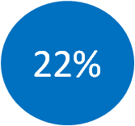
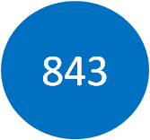

Corporate Volunteering: Committing Ourselves
Corporate Volunteering is one of the most important activities promoted by Deutsche group in its corporate citizenship program. Deutsche Italy, following the corporate strategy, promotes the so-called Social Days,when more than 200 employees in the past years could dedicate their time in pursuing social goals. This represents an important statement of the bank, that considers volunteering important for the personal and professional growth.
From 2011, Deutsche Italia has been partnering with many partners such as, among others, Banco Alimentare, CAF Onlus and Sodalitas.
Social Days 2017
In 2017 the Deutsche corporate volunteers offered their services to Cometa, a non-profit organization engaged in the reception and education of children and young people and in the support of their families, that since 2009 it has created the Oliver Twist Professional School, dedicated to professional training in "Made in Italy" craftsmanship.
With this corporate volunteering initiative, the 12 Deutsche volunteers had the opportunity to contribute in 3 days to package gifts for the Christmas charity sale organized by Cometa. Every year the institution organizes a Christmas offer of products created by the students of the school.
Our corporate volunteers helped facing the great demand for Cometa's Christmas products.
Cometa is one of the parteners of Fondazione Deutsche Italia, which has supported in particular "The Workshop of Wood", the professional course on carpentry held by the Oliver Twist School.
Social Days 2015
2015 has been an year rich of activities and initiatives. More than 200 Deutsche employees have cooperated with 4 different organization in 40 different occasions. The institutions partner: Sodalitas, Opera san Francesco for Poor People, Sant'Egidio Community and Banco Alimentare.
Volunteers for one day @EXPO with Sodalitas. Through Sodalitas, for 26 Mondays Deutsche employees have worked as volunteers at EXPO, helping families with children, disabled and all those that needed particular support.
Opera San Francesco for poor people. From April to Novemeber, once a month the employees has helped the staff in the homeless center. Moreover, a second-hand clothes collection was organized in the offices of Milano Bicocca and Milano Turati.
Sant'Egidio Community. Sant'Egidio Community was founded in 1968 and since then it has helped people all around the world. Our volunteers have worked in the Sant'Egidio center in Milan, helping with the everyday activities and keep company to the hosts.
Banco Alimentare. As in the past years, three days of volunteering have been organized in the branches of Milan, Turin and Rome. In addition, as in 2014, a collection of food has been organized in the offices of Milano Turati, Milano Bicocca and Rome.
Social Days 2014
In 2014, 27 volunteers has dedicated their time to Opera San Francesco for poor people, an organization that help and sustain homeless people or those that do not have the means to survive. The employees have been helped in the homeless center, that everyday welcome and provide first need goods to those in need.
As in 2011, other employees have supported CAF, Centre of Help for Abused Children and their families, in the everyday activities of the association.
Social Days 2013
The first one in collaboration with AIBE (Italian Association of foreign Banks) to support Milano Altruista to restore a green area in Milan. The initiative, carried also by other foreign banks (Citybank, BNP and Credit Suisse) aimed at the creation of a green public space that could become an aggregation area for children and families. The volunteers had the opportunity not only to work, but also to find out how a vegetable garden works and all the activities involved in its maintenance. Milano Altruista is an association meant to promote volunteering activities in Milan, building contacts between associations and volunteers that can select the project that fits the most inclinations and interests.
Another project that has involved many colleagues has been the cooperation with Banco Alimentare. Deutsche support Banco Alimentare in its mission to reduce food wastes and distribute to less advantaged people. Deutsche employees have been helped Banco Alimentare staff in different activities, as the preparation of food, section of products donated by supermarkets. In total, 378 hours of volunteering have been offered to the center. In addition, Deutsche has organized a food collection at the offices in Milano Bicocca. In 2 days more than 500 kilos of products have been collected and donated to Banco Alimentare.
Social Days 2012
In 2012 Deutsche has promoted a project with Archè Onlus, that is working to help those children affected by HIV at an early age. The main objective is to give support and give a life project to those children and families that cannot find respect and serenity in other ways due to their health problems.
The project Deutsche runs for Children is meant to raise funds to provide support to three families for one year. Anrchè Foundation receive a total sum of 100 thousands euros, half of it donated by the employees and the other half by Deutsche Italia Foundation. This result has helped to support Casa Archè, hosting up to 18 people that receive assistance and hospitality all year long by a team of educators, psychiatric.
Social Days 2011
The iniziative Social Days was born in 2011, when Deutsche employees in Milan and Lecco have been involved in helping CAF (Centre of Help for Abused Children and their families) in two different occasions. During the first day, eh volunteers have rearranged the garden, the basements and the rooms of the children. The second day of activity has been dedicated to the wrapping of typical Italian cakes eaten during Christmas. The selling of these products is one of the means used by the Centre to raise funds.
Our Corporate Volunteering Program
Corporate volunteering is considered a foundamental part of corporate citizenship programs.

Of the total employees have been involved at least once in a project of volunteering.

Projects worldwide have been activated.
To find out more about volunteering activities and all our values check the global website.